File: 000030.gt.txt (if the image is defective, simply delete all Arabic text and the line will be excluded)
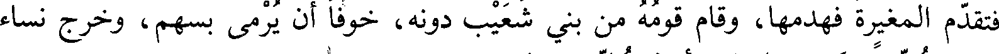
فتقدم المغيرة فهدمها، وقام قومه من بني شعيب دونه، خوفا أن يرمى بسهم، وخرج نساء
File: 000031.gt.txt (if the image is defective, simply delete all Arabic text and the line will be excluded)
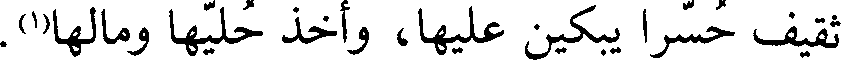
ثقيف حسرا يبكين عليها، وأخذ حليها ومالها(1).
File: 000032.gt.txt (if the image is defective, simply delete all Arabic text and the line will be excluded)
وكان أبو مليح بن عروة بن مسعود، وقراب بن الأسود بن مسعود قدما على رسول
File: 000033.gt.txt (if the image is defective, simply delete all Arabic text and the line will be excluded)
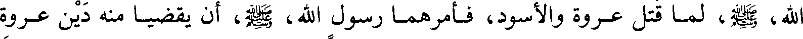
الله، صعلم، لما قتل عروة والأسود، فأمرهما رسول الله، صعلم، أن يقضي منه دين عروة
File: 000034.gt.txt (if the image is defective, simply delete all Arabic text and the line will be excluded)
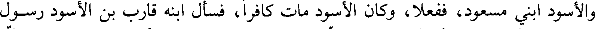
والأسود ابني مسعود ففعلا، وكان الأسود مات كافرا، فسأل ابنه قارب بن الأسود رسول
File: 000035.gt.txt (if the image is defective, simply delete all Arabic text and the line will be excluded)
الله، صعلم، أن يقضي دين أبيه، فقال: إنه كافر. فقال: «يصل مسلم ذا قرابته»، يعني أنه
File: 000036.gt.txt (if the image is defective, simply delete all Arabic text and the line will be excluded)
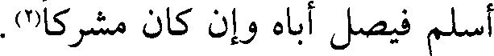
أسلم فيصل أباه وإن كان مشركا(2).
File: 000037.gt.txt (if the image is defective, simply delete all Arabic text and the line will be excluded)
ذكر غزوة طيء وإسلام عدي بن حاتم
File: 000038.gt.txt (if the image is defective, simply delete all Arabic text and the line will be excluded)
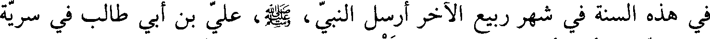
في هذه السنة في شهر ربيع الآخر أرسل النبي، صعلم، علي بن أبي طالب في سرية
File: 000039.gt.txt (if the image is defective, simply delete all Arabic text and the line will be excluded)
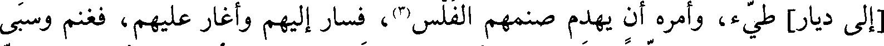
[إلى دار] طيء، وأمره أن يهدم صنمهم الفلس(2)، فسار إليهم وأغار عليهم، فغنم وسبى
File: 000040.gt.txt (if the image is defective, simply delete all Arabic text and the line will be excluded)
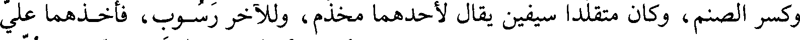
وكسر الصنم، وكان متقلدا سيفين يقال لأحدهما مخذم، وللآخر رسوب، فأخذهما علي
File: 000041.gt.txt (if the image is defective, simply delete all Arabic text and the line will be excluded)
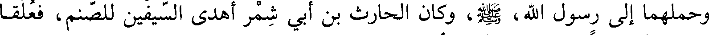
وحملهما إلى رسول الله، صعلم، وكان الحارث بن أبي شمر أهدى السيفين للصنم، فعلقا
File: 000042.gt.txt (if the image is defective, simply delete all Arabic text and the line will be excluded)
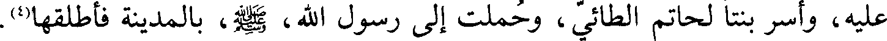
عليه، وأسر بنتا لحاتم الطائي، وحملت إلى رسول الله، صعلم، بالمدينة فأطلقها(4).
File: 000043.gt.txt (if the image is defective, simply delete all Arabic text and the line will be excluded)
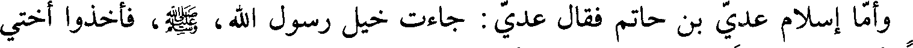
وإما إسلام عدي بن حاتم فقال عدي: جاءت خيل رسول الله، صعلم، فأخذوا أختي
File: 000044.gt.txt (if the image is defective, simply delete all Arabic text and the line will be excluded)
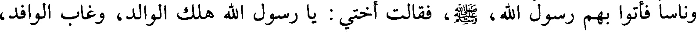
وناسا فأتوا بهم رسول الله، صعلم، فقالت أختي: يا رسول الله هلك الوالد، وغالب الوافد،
File: 000045.gt.txt (if the image is defective, simply delete all Arabic text and the line will be excluded)
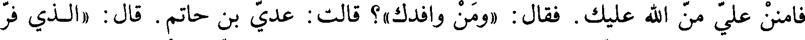
فامنن علي من الله عليك. فقال «ومن وافدك»؟ قالت: عدي بن حاتم. قال: «الذي فر
File: 000046.gt.txt (if the image is defective, simply delete all Arabic text and the line will be excluded)
من الله ورسوله»! من عليها، وإلى جانبه رجل قائم وهو علي بن أبي طالب، قال:
File: 000047.gt.txt (if the image is defective, simply delete all Arabic text and the line will be excluded)
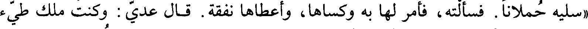
«سليه حملانا. فسألته، فأمر لها به وكساها، وأعطاها نفقة. قال عدي: وكنت ملك طيء
File: 000048.gt.txt (if the image is defective, simply delete all Arabic text and the line will be excluded)
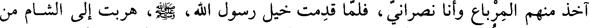
آخذ منهم المرباع وأنا نصراني، فلما قدمت خيل رسول الله، صعلم، هربت إلى الشام من
File: 000049.gt.txt (if the image is defective, simply delete all Arabic text and the line will be excluded)
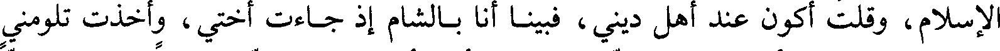
الإسلام، وقلت أكون عند أهل ديني، فبينا أنا بالشام إذ جاءت أختي، وأخذت تلومني
File: 000050.gt.txt (if the image is defective, simply delete all Arabic text and the line will be excluded)
على تركها وهربي بأهلي دونها، ثم قالت لي: أرى أن تلحق بمحمد سريعا، فإن كان نبيا
File: 000051.gt.txt (if the image is defective, simply delete all Arabic text and the line will be excluded)
كان للسابق فضله، وإن كان ملكا كنت في عز وأنت أنت. قال: فقدمت على رسول
File: 000052.gt.txt (if the image is defective, simply delete all Arabic text and the line will be excluded)
الله، صعلم، فسلمت عليه وعرفته نفسي، فانطلق بي إلى بيته، فلقيته امرأة ضعيفة
File: 000053.gt.txt (if the image is defective, simply delete all Arabic text and the line will be excluded)
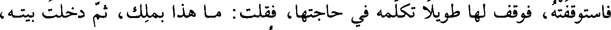
فاستوقفته، فوقف لها طويلا تكلمه في حاجتها، فقلت: ما هذا بملك، ثم دخلت بيته،
File: 000054.gt.txt (if the image is defective, simply delete all Arabic text and the line will be excluded)
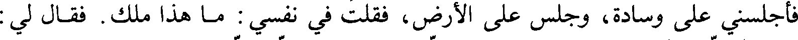
فأجلسني على وسادة، وجلس على الأرض، فقلت في نفسي: ما هذا ملك. فقال لي:
File: 000055.gt.txt (if the image is defective, simply delete all Arabic text and the line will be excluded)
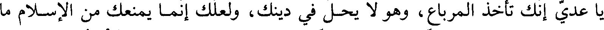
يا عدي إنك تأخذ المرباع، وهو لا يحل في دينك، ولعلك إنما يمنعك من الإسلام ما
File: 000056.gt.txt (if the image is defective, simply delete all Arabic text and the line will be excluded)
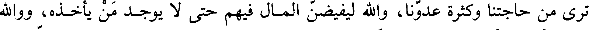
ترى من حاجتنا وكثرة عدونا، والله ليفيضن المال فيهم حتى لا يوجد من يأخذه، ووالله
File: 000057.gt.txt (if the image is defective, simply delete all Arabic text and the line will be excluded)
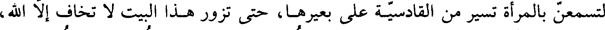
لتسمعن بالمرأة تسير من القادسية على بعيرها، حتى تزور هذا البيت لا تخاف إلا الله،
File: 000058.gt.txt (if the image is defective, simply delete all Arabic text and the line will be excluded)
ووالله لتسمعن بالقصور البيض من بابل وقد فتحت. قال فأسلمت، فقد رأيت القصور
File: 000059.gt.txt (if the image is defective, simply delete all Arabic text and the line will be excluded)
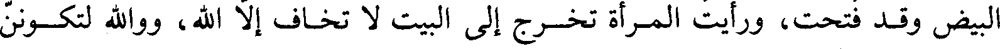
البيض وقد فتحت، ورأيت المرأة تخرج إلى البيت لا تخاف إلا الله، ووالله لتكونن
To Save: `Ctrl+s`, make sure to choose `Webpage, complete`!